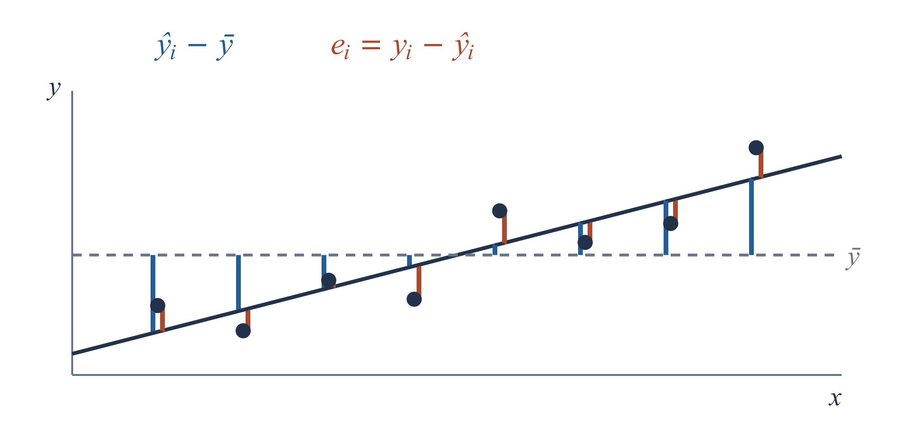
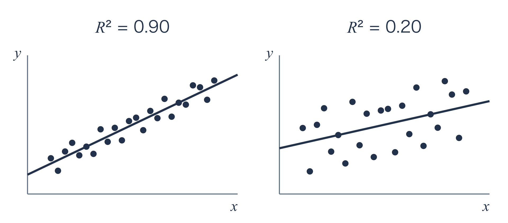

当てはまりの指標と F 検定
回帰直線と出生率の当てはまりの図では, 21 か国の実測値と当てはめ値のずれを国ごとに見ました. 回帰式全体の出力では, このずれを要約する決定係数と調整済み決定係数, F 統計量とその P 値を取り出せます. まず 3 つの値の定義を確かめ, そのあと 21 か国の値を出力して読みます.
決定係数
第 i 番目の観測を (x_i,y_i) とし, y_i の標本平均を \bar y, 回帰式の当てはめ値を \hat y_i, 残差を e_i=y_i-\hat y_i と書きます. 切片を含む最小二乗回帰では, 標本における目的変数の散らばりを, 次の二乗和で表せます.
- 全変動は \sum_i(y_i-\bar y)^2 です. 目的変数が標本の平均からどれだけ散らばっているかを表します.
- 回帰変動は \sum_i(\hat y_i-\bar y)^2 です. 回帰式が観測ごとに与える当てはめ値の散らばりを表します.
- 残差変動は \sum_i(y_i-\hat y_i)^2 です. 回帰式を当てはめた後に残る散らばりを表します.
次の 2 つの模式図では, 8 組の観測 (x_i,y_i) を使って, それぞれの二乗和に入る縦方向の差を示します.

図では, 観測点と平均線の差が y_i-\bar y, 回帰直線と平均線の差が \hat y_i-\bar y, 観測点と回帰直線の差が e_i です.
観測値の平均からの差は, y_i-\bar y=(\hat y_i-\bar y)+e_i です. 二乗して足すと, 交差項の和には \sum_i(\hat y_i-\bar y)e_i が現れます. 切片を含む最小二乗回帰の正規方程式は, 残差の和 \sum_i e_i と, x_i を掛けた残差の和 \sum_i x_i e_i がともに 0 になることを表します. \hat y_i-\bar y は x_i の一次式なので, この二つの和が 0 なら交差項の和も 0 です. したがって, 全変動は回帰変動と残差変動の和になります.

図では, 平均線から当てはめ値までの差と, 当てはめ値から実測値までの差が同じ向きの観測と, 反対向きの観測があります. 二乗和の分解は, 標本全体で交差項を足したときに成り立ちます.
全変動が正のとき, 回帰変動が全変動に占める割合を決定係数 R^2 と呼びます.
R^2=\frac{\sum_i(\hat y_i-\bar y)^2}{\sum_i(y_i-\bar y)^2} =1-\frac{\sum_i e_i^2}{\sum_i(y_i-\bar y)^2}.
標本に回帰式がよく当てはまるほど残差変動は小さく, R^2 は 1 に近づきます.
次の 2 つの図も模式図で, 全変動が同じになるように作った 2 組の合成データを比べています.

二つの標本の全変動を同じにして比べると, 点が直線の近くに集まる左の方が決定係数は大きくなります.

同じ散布図に残差を描くと, 右の方が長い縦線が多く, 残差の二乗和も大きくなります.
自由度調整済み決定係数
同じ標本で説明変数を追加すると, 追加した変数の係数を 0 として元と同じ式を選ぶこともできます. そのため, 最小二乗法で求めた残差変動は増えず, R^2 は下がりません. 自由度調整済み決定係数では, 残差変動と全変動をそれぞれの自由度で割ってから比を取ります.
R^2_{\mathrm{adj}} =1-\frac{\sum_i e_i^2/(n-k-1)}{\sum_i(y_i-\bar y)^2/(n-1)}.
n は標本の大きさ (この節の例では 21), k は説明変数の数で, 切片は含めません (単回帰では 1).
変数を追加したとき, 残差変動の減少が自由度の減少に見合わなければ, R^2_{\mathrm{adj}} は下がります. 値が負になる場合もあります. どちらの決定係数も, 回帰式を当てはめた標本についての指標です. 式を求めるのに使っていない国や年についての誤差は, 予測と予測誤差のように未使用のデータで測ります.
F 検定
切片だけの式と比べると, 説明変数を加えた式の残差変動はどの程度小さくなるでしょうか. F 検定の帰無仮説は, すべての傾きが 0 であること (H_0:\beta_1=\cdots=\beta_k=0) です. 対立仮説は, 少なくとも 1 つの傾きが 0 以外であることです. 切片だけの式の当てはめ値は \bar y なので, 残差変動の減少分は回帰変動になります. 回帰変動と残差変動を自由度で割った値の比が F 統計量です.
F=\frac{\sum_i(\hat y_i-\bar y)^2/k}{\sum_i e_i^2/(n-k-1)}.
k 個の説明変数の係数が一意に定まり, 母集団の条件つき平均が切片と各説明変数の一次式で表されること (母回帰式) と, 独立・等分散の正規誤差を仮定すると, 帰無仮説のもとで F は自由度 (k,n-k-1) の F 分布に従います. F 検定の P 値は, その分布で観測した F 以上となる確率です. この確率が小さければ, 観測した F は帰無仮説のもとで起こりにくい値です. 個々の係数については, 信頼区間に 0 が含まれるか, または係数が 0 という仮説に対する P 値を調べます. 詳しくは傾きが 0 かを調べるにあります.
21 か国の値を読む
21 か国に当てはめた回帰式について, 決定係数, 調整済み決定係数, F 統計量とその P 値を取り出します.
print(f"R-squared: {result.rsquared:.3f}")
print(f"Adj. R-squared: {result.rsquared_adj:.3f}")
print(f"F-statistic: {result.fvalue:.3f}")
print(f"Prob (F-statistic): {result.f_pvalue:.3f}")R-squared: 0.130
Adj. R-squared: 0.084
F-statistic: 2.845
Prob (F-statistic): 0.108決定係数は 0.130 で, 手元の 21 か国の出生率のばらつきのうち, 当てはめた直線で表せた割合を示します. 内閣府の図の決定係数 0.2966 とは値が異なります. 傾きと同じく, 比べるときは 2 つの式の算出に使った国と調査年を確かめます. 調整済み決定係数 0.084 も同じ 21 か国への当てはまりの指標で, 説明変数の数を考慮した値です. 切片を含む単回帰では, F 統計量が傾きの t 統計量の二乗 (F=t^2) になるため, F 検定と傾きの両側検定の P 値はともに 0.108 です. ただし, 単回帰の係数と国の組み合わせで述べたとおり, 21 か国は母集団から無作為に取り出した標本ではないので, この P 値も母集団への推測には使いません.
自由度調整済み決定係数が低いことは, 国の間の出生率の違いのうち, この回帰式で表せる部分が小さいことを示します. 決定係数の値にかかわらず, 国の間の関連からは, 日本で男性の家事・育児時間を増やしたときに出生率がどう変わるかは分かりません.
介入の効果を問う方法は因果推論とは何かで扱います. 出生率の例で, 日本での介入の効果を求めるのに何が要るかは国の間の出生率の比較と国内での介入で述べます. その前に, 重回帰分析と偏回帰係数では, 説明変数を 2 つ以上にして, 他の変数の値が同じ観測どうしを比べる方法を考えます.